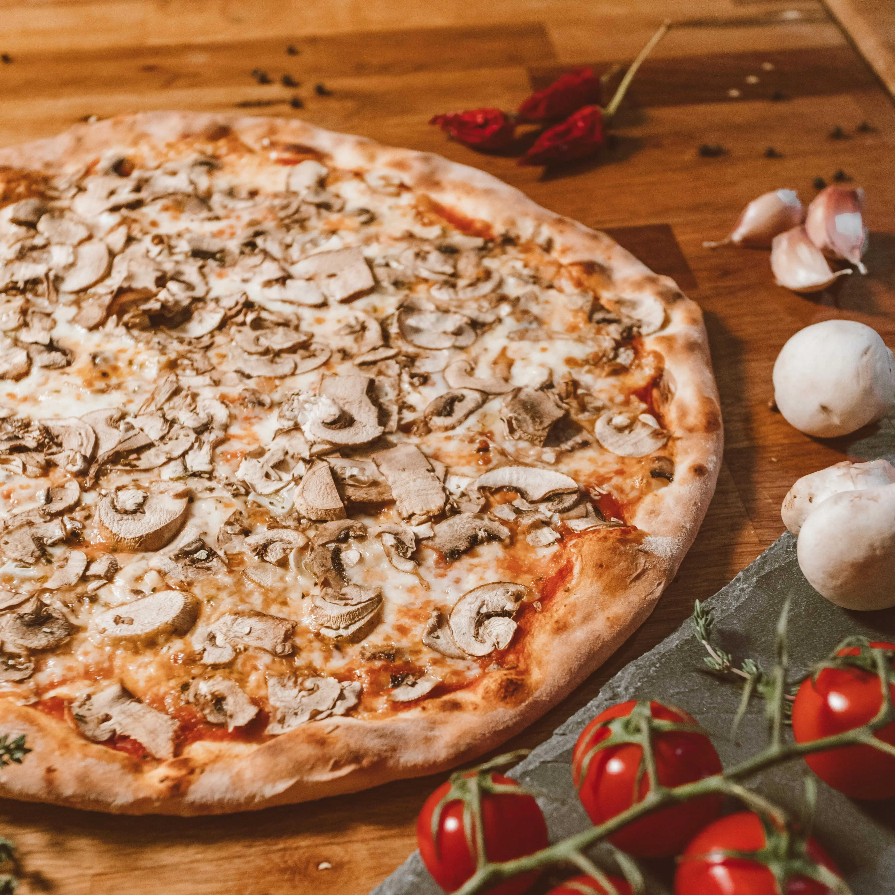
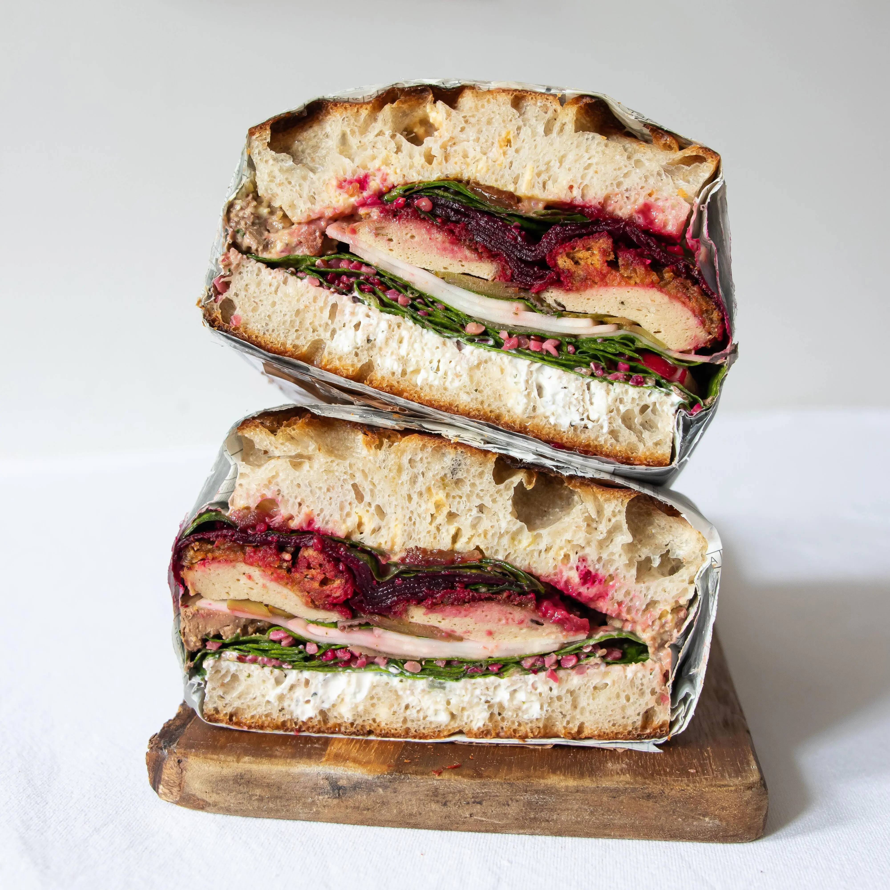
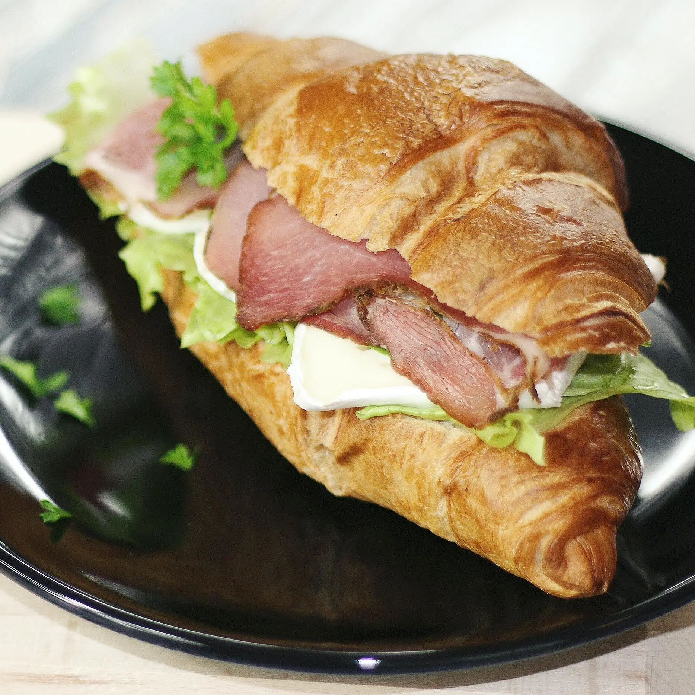
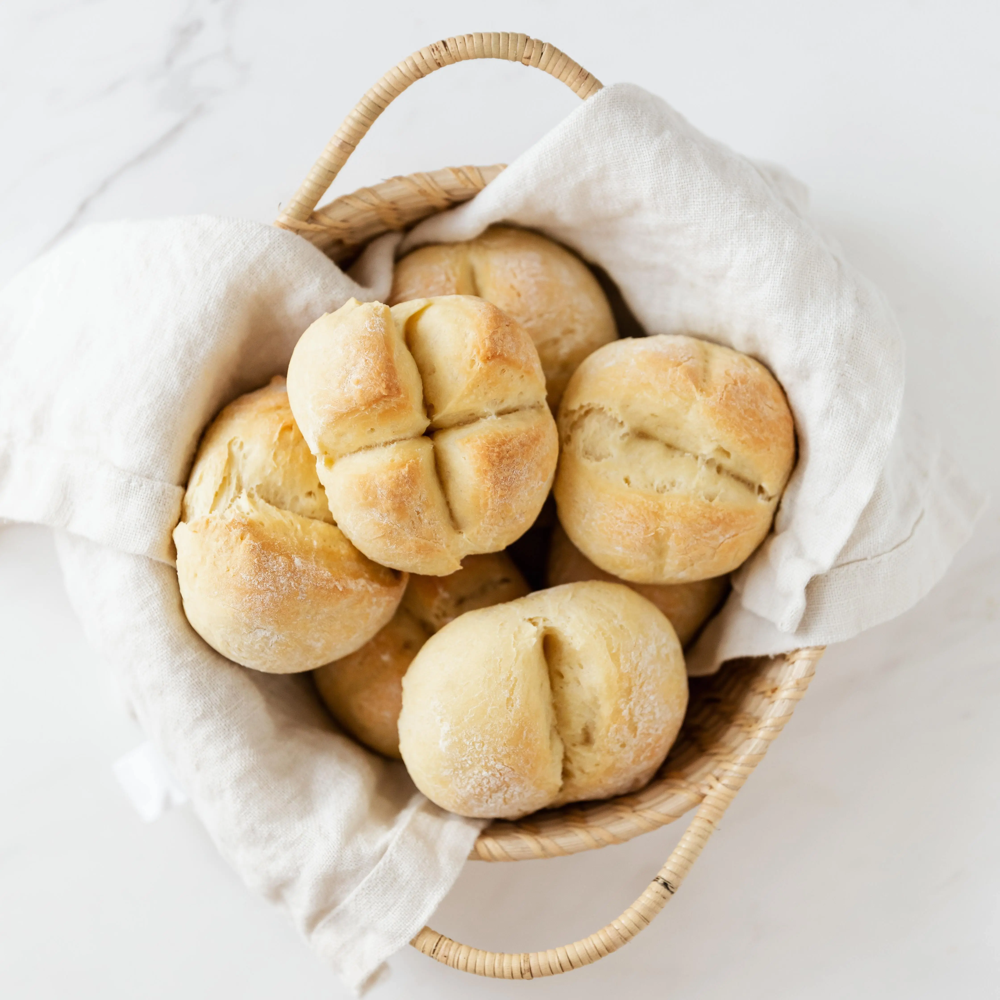
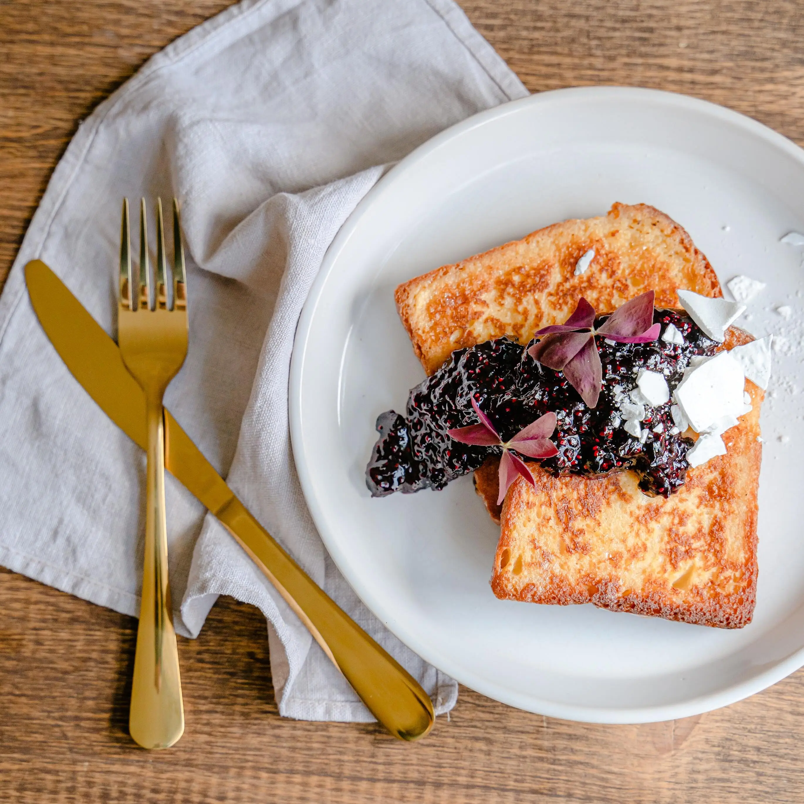
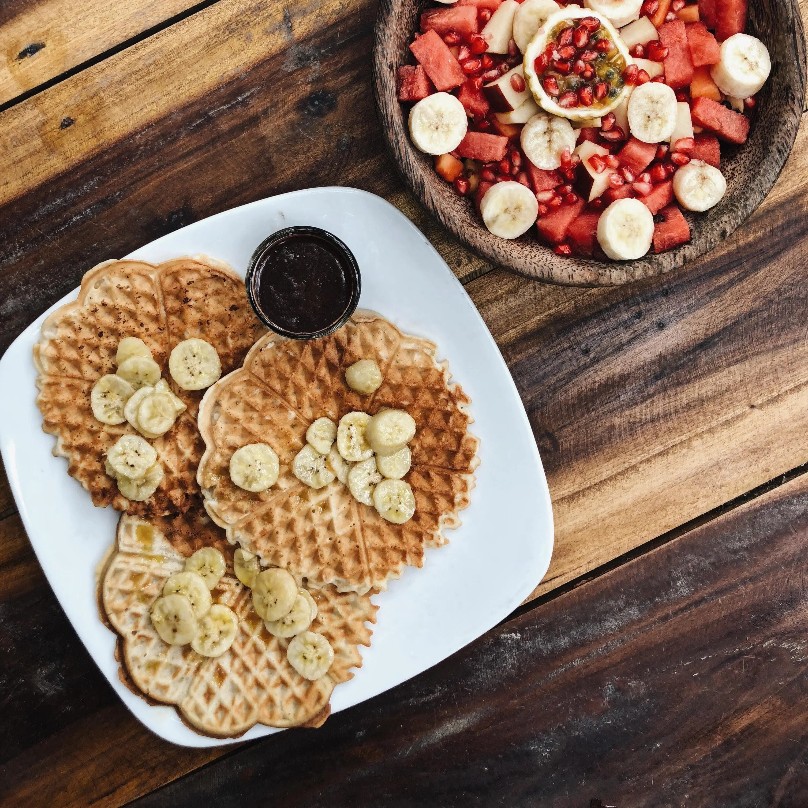
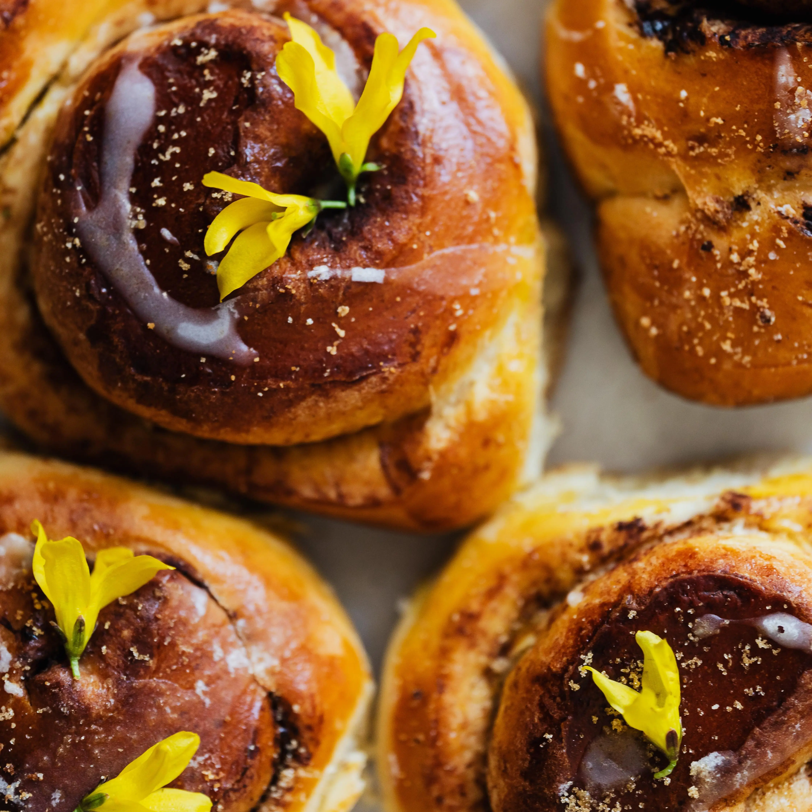

Nos encanta que nos visiten! Pero como sabemos que a veces no hay nada más lindo como quedarse en casa y comer algo rico en familia o con amigos, les compartimos algunas de nuestras recetas:
- Pizza
- Sandwich de tofu
- Croissant relleno
- Rosetas
- Tostadas francesas
- Waffles
- Manzanas rellenas
- Kanelboller
- Matcha latte
- Chai latte

Pizza
8 porciones
Ingredientes:
- 250gr harina común + extra para amasar
- 4gr levadura seca / 12gr levadura fresca
- 1 cda aceite
- 125ml agua tibia
- 2gr sal
- 1 tomate mediano
- 2 dientes de ajo
- 250gr queso muzzarella
- Champignones c/n
- Aceite de oliva
- Sal y pimienta
Procedimiento:
- En la mesada hacer una corona con la harina y salar por el borde externo.
- En el centro de la corona agregar la levadura, el aceite y un poquito de agua. Integrar con un poco de la harina y dejarlo reposar 5 minutos.
- De a poco agregar mas agua y amasar hasta formar una masa lisa. Formar un bollo y dejar leudar hasta que duplique su tamaño.
- Mientras leuda la masa picar los dientes de ajo y procesar o cubetear el tomate. Calentar una pequeña olla con aceite de oliva y hechar la mitad del ajo picado, dorar por unos segundos y agregar el tomate. Salpimentar a gusto, agregar un chorrito de agua y dejar cocinar tapado por unos minutos.
- Mientras se cocina la salsa filetear algunos champignones (a gusto). Calentar una sartén con aceite de oliva y dorar el resto del ajo por unos segundos, luego agregar los champignones y saltear hasta que estén levemente cocidos. Apagar el fuego de los champignones y de la salsa.
- Una vez la masa haya duplicado, desgasificarla y estirarla de acuerdo a la fuente. Colocarla en la pizzera y dejarla leudar nuevamente por 10 minutos. Pre calaentar el horno.
- Meter la masa en horno medio hasta que se la note levemente cocida. Retirar, colocar la salsa y el queso y volver al horno pero esta vez fuerte.
- Una vez derretido el queso sacarla y esparcir los champignones por encima, darle un último golpe de horno y retirar. Un chorrito de aceite de oliva por encima y listo para comer!
Animate a jugar con otros ingredientes como Miguel, nuestro cocinero.

Sandwich de tofu
1 porción
Indredientes:
- Tofu firme
- ½ limón
- Condimentos: ajo en polvo, orégano seco, pimentón ahumado, cúrcuma, sal y pimienta
- Aceite de oliva
- Pan de preferencia
- Otros ingredientes: espinaca, queso vegano, pepinillos, remolacha encurtida y hummus
Procedimiento:
- Cortar tofu en una rebanada de 1cm.
- Colocar en una sartén pre calentada con un chorrito de aceitede oliva, condimentar a gusto con el jugo de limón y los condimentos.
- Tapar, bajar el fuego al mínimo y cocinar por 10 minutos.
- Dar vuelta la pieza, volver a condimentar y cocinar por 4 minutos o hasta que esté dorado.
- Para emplatar podes usar tu pan favorito y las verduras de tu preferencia, nosotros usamos nuestro pan casero, espinaca, queso vegano, pepinillos, remolacha encurtida y hummus para darle humedad.
- Si lo tuyo no es el tofu podes reemplazarlo por pollo, solo cambia la cocción que serían 15 minutos de un lado y 10 minutos del otro lado o hasta que se dore.

Croissant relleno
1 porción
Ingredientes:
- 1 croissant
- Pastrami
- Queso brie
- Lechuga
- Aceite de oliva
Procedimiento:
- Cortar el croisant por la mitad.
- Pre calentar una sarten con aceite de oliva y colocar ambas mitades por 3 minutos o hasta que se vea dorado.
- Pasar de la sartén a un plato y rellenar. Nosotros lo hicimos con pastrami, queso brie y lechuga, pero podes cambiar los ingredientes por los que más te gusten e incluso probar nuevas combinaciones.
Podés conseguir nuestros croisants pasando por el local!

Rosetas
12 panes
Ingredientes:
- 1kg harina común + extra para espolvorear
- 6gr levadura seca / 20gr levadura fresca
- 100gr grasa
- 10gr extracto de malta
- 500ml agua
- Sal c/n
Procedimiento:
- Hacer una corona con la harina y salar por fuera.
- En el centro colocar la levadura, la grasa, la malta y el agua de a poco. Amasar hasta formar una masa suave.
- Reservar tapado hasta que duplique su volumen.
- Desgasificar y armar bollos de 100 gramos.
- Colocar en una placa enmantecada, espolvorear con harina y realizar 2 cortes perpendiculares. Dejar leudar por 15 minutos. Pre calentar el horno.
- Cocinar en horno fuerte por 15 minutos o hasta que se vean dorados.

Tostadas Francesas
1 porción
Ingredientes:
- 2 rodajas pan lactal
- 1 huevo
- 1 cda leche
- Azúcar c/n
- Canela c/n
- 1 cdta manteca
Procedimiento:
- En un recipiente batir el huevo junto con dos cucharaditas de canela y dos cucharadas de azúcar.
- Tomar una rodaja de pan lactal y humedecerlo bien en la mezcla. Pre calentar una sartén con un poco de manteca que cubra todo el fondo.
- Una vez caliente colocar el pan en la sartén y espolvorear por encima con un poco mas de canela y de azúcar. Cocinar por 5 minutos o hasta que se dore, dar la vuelta y repetir del otro lado.
- Repetir el proceso con la otra rodaja de pan. Agregar más manteca de ser necesario.
- Se puede servir con la mermelada o dulce de tu preferencia o, si se prefiere como postre se puede acompañar con una bocha de helado (a nosotros nos gusta acompañar con granizado).

Waffles
5 porciones
Ingredientes:
- 2 tazas de harina
- 1 cdta sal
- 1 cda polvo para hornear
- 2 cda azúcar
- 2 huevos
- 1 ½ taza leche tibia
- 75gr manteca derretida
- 1 cdta extracto de vainilla
Procedimiento:
- En un bowl mezclar harina, sal, polvo para hornear y azúcar.
- En otro bowl batir los huevos y luego agregar la leche tibia, la manteca derretida y y el extracto de vainilla, mezclar.
- Agregar lo húmedo a lo seco, incorporar. Colocar la mezcla en una wafflera pre calentada, en caso de no tener wafflera se puede usar la mezcla para hacer hotcakes.
- Una vez dorados servir con el acompañamiento de tu preferencia.
Manzanas rellenas
2 porciones
Ingredientes:
- 2 manzanas
- Nueces
- Castañas de cajú
- Pasas de uvas
- Miel líquida
- Canela en polvo
- Opcional: helado de vainilla
Procedimiento:
- Lavar muy bien las manzanas, cortar la parte superior en forma de tapa y retirar el corazón y ahuecar con un cuchillo o un utensilio para vaciar frutas.
- Reservar por un lado las manzanas ahuecadas y por otro los restos de fruta.
- Picar un puñado de nueces y otro de castañas de cajú en mitades.
- En un bowl mezclar los frutos secos junto con pasas y los restos de fruta.
- Sobre una fuente rellenar las manzanas ahuecadas con la mezcla y echar por encima miel líquida con canela.
- Tapar las manzanas y cocinar en horno pre calentado por 45 minutos o hasta que estén tiernas y la piel comience a arrugarse.
- Retirar del horno y servir, se pueden acompañar con una bocha de helado de vainilla.

Kanelboller
10 porciones
Ingredientes:
- 500gr harina
- ½ paquete (3,5gr) levadura en polvo
- ½ cdta sal
- 1 cdta cardamomo en polvo
- 120gr azúcar
- 300ml leche
- 150gr manteca a temperatura ambiente
- Canela en polvo
Procedimiento:
- En un bowl mezclar harina, levadura en polvo, sal, cardamomo en polvo y 75gr de azúcar. Reservar.
- Entibiar la leche y agregarla al bowl de ingredientes secos, mezclar y amasar hasta que se forme una masa homogénea.
- Incorporar en tres partes 75gr de manteca y mezclar hasta que se integre bien. Poner en un bowl y tapar con papel film por 45 min o hasta que duplique su tamaño.
- Mientras la masa está leudando mezclar los 75gr de manteca restantes con 3 cucharadas de canela y 45gr de azúcar hasta formar una pasta suave. Pre calentar el horno a 200°C.
- Una vez duplicada la masa espolvorear la superficie con harina y amasar por aproximadamente 5 min,la masa se va a sentir menos oleosa.
- Con un palo de amasar estirar la masa de forma rectangular, ahora hay dos maneras de proceder:
- La versión noruega: esparcir la pasta de canela en una de las mitades y doblar la otra mitad sobre esta. Cortar la masa en tiras de 2cm, enroscar la masa y hacer nudos.
- La versión tradicional: esparcir la pasta de canela sobre toda la masa dejando un borde sin pasta de 1cm. Enrollar la masa y cortar piezas de 2 o 3 cm.
- Colocar los bollos en una placa para horno enmantecada o con papel manteca, dejar leudar 15 min.
- Pasarle doradura con un pincel y meter en el horno pre calentado por 15 minutos o hasta que se vean dorados por encima. A disfrutar!
Matcha latte
1 porción
Ingredientes:
- 1 ½ cdta polvo matcha
- 1 cda agua caliente
- 2 cdta miel
- ¾ taza leche caliente
Procedimiento:
- Espolvorear el matcha dentro de la taza que vamos a usar.
- Agregar el agua caliene y mezclar con un batidor de matcha hasta que no quede ningún grumo. En caso de no tener un batidor de matcha se puede utilizar uno común.
- Incorporar la miel, mezclar.
- Agregar la leche caliente y batir con un espumador.
- Ya está listo para que lo disfrutes! Si preferís tomarlo frío podes agregarle hielo al terminar.
Indian Chai latte
4 porciones
Ingredientes:
- Mezcla especias indian chai (canela, cardamomo, clavo de olor, pimienta, anís estrellado)
- Jengibre c/n
- 4 saquitos té negro
- 500ml agua
- 500ml leche
- 2 cda azúcar rubia
Procedimiento:
- Tostar las especias en una sartén hasta que se sienta su fragancia.
- Poner las especias tostadas, un pedazo de jengibre y los saquitos de té en una tetera y dejar infusionar por 10 minutos (se puede utilizar una pequeña olla con tapa)
- Calentar la leche con el azúcar, mezclar hasta que se disuelva.
- Repartir el té en las cuatro tazas, luego agregar la leche, mezclar.
- Se puede tomar así o también espumar la leche antes de mezclarla con el té y decorar espolvoreando canela por encima.